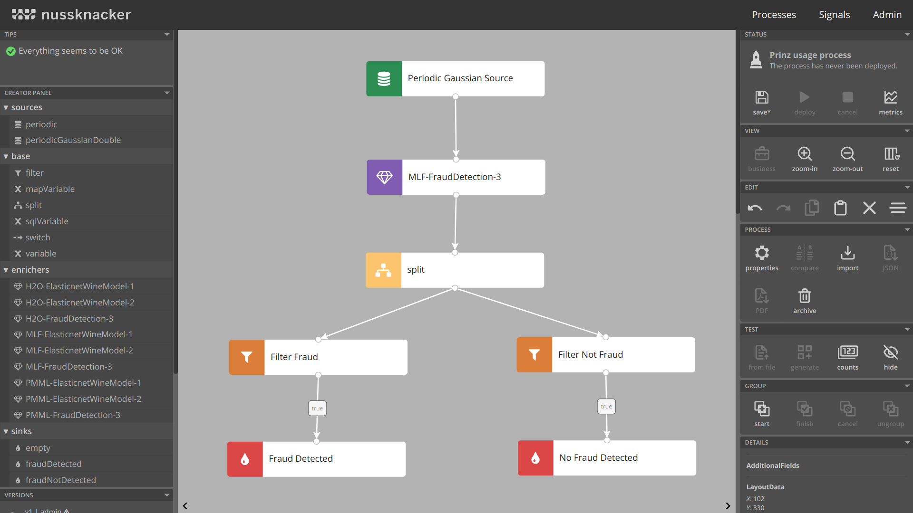

class: center, middle <img src="./images/prinz-logo.svg" style="height: 16em"> # "Integrating Nussknacker with selected Machine Learning tools" --- ## Agenda .left-half[ - Introduction 1.1 Source of problem 1.2 Available tools 1.3 Our mission ] -- .left-half[ - Implementation 2.1 Prinz API 2.2 MLflow implementation 2.3 PMML implementation 2.4 H2O implementation 2.5 Prepared examples ] -- .left-half[ - Technical aspects of project 3.1 Environment for development 3.2 Project management 3.3 Final results ] --- class: center, middle # Introduction --- ## Basic terms - Event Stream Processing - definition of ESP - most common use cases - Fraud detection - example categories of fraud - usage of Machine Learning and Event Stream Processing --- ## Introduction to Nussknacker and Prinz - Nussknacker - Event Stream Processing tool - open-source, developed by TouK - easy to use GUI, intended for non-programmers - main use case - fraud detection - Prinz - library of extensions for Nussknacker - provides integrations with Machine Learning engines/repositories - applications are highly configurable thanks to the Prinz API --- class: center, middle # Prinz API --- ## Overview - main goal of the API - consistent and simple integration process - mandatory traits - ModelSignature with SignatureProvider - Model and ModelInstance - ModelRepository --- ## ModelSignature with SignatureProvider - ModelSignature - defines the input and output format of the model - two lists - one for the input and one for the output - each entry consists of a SignatureName and SignatureType - SignatureProvider - extracts the signature from a model - takes care of the typing --- ## Model, ModelInstance, and ModelRepository - Model - a top-level representation of the model - can be instantiated and prepared for scoring - gives access to the model metadata - ModelInstance - runnable instance of the model - verifies input data and and returns model output - ModelRepository - contains configuration information - lists models for a given integration --- class: center, middle # MLflow integration --- ## Integration overview <img id="mlflow-logo" src="./images/mlflow-logo.svg" alt="MLflow logo" title="MLflow logo" /> - project to manage the complete ML models lifecycle - open-source and open-interface approach to project - well documented library API - ML models management (with user friendly Web UI) - ML models serving --- ## Models lifecycle in prepared environment 1. Configure and set up the MLflow models registry with DB and extra services 2. Train small, toy models and add them to the models registry 3. Serve trained models as service 4. Score trained models from Prinz in Nussknacker ## Extra assumptions - models trained with signature saved to storage service (S3 bucket) - served models location depends on the name and version of the model - models outputs indexing --- ## Models Repository - based on open source scala HTTP client (`sttp`) - implementation of MLflow REST API from scratch - heavy use of Scala `circe` library with `@JsonCodec` approach - parametrized with external configuration <img id="mlflow-repository" src="./images/mlflow-run-list.png" alt="MLflow repository" /> --- ## Model and Model' Instance - listed from JSON response from MLflow registry - models' signatures downloaded from external service - models converted to instances capable of scoring external service - need of i/o data conversion .left-half[ ``` my_model/ ``` ``` - MLmodel - model.pkl ``` ] .right-half[ ``` MLmodel: ``` ```yaml time_created: 2020-12-20T17:28:53.35 flavors: sklearn: sklearn_version: 0.19.1 pickled_model: model.pkl python_function: loader_module: mlflow.sklearn ``` ] --- ## Model Signature - created during training by Data Scientists - available on external storage service as YAML file - downloaded once per model loading process - automatic parse process with strict typing approach ```yaml signature: inputs: > [ {"name": "age", "type": "string"}, {"name": "gender", "type": "string"}, {"name": "category", "type": "string"}, {"name": "amount", "type": "double"} ] outputs: > [ {"type": "integer"} ] ``` --- class: center, middle # PMML integration --- ## Integration overview - standard describing format of machine learning models - based on XML - managed by Data Mining Group - Repository Client --- ## PMML Fields - Header - Data Dictionary - Mining Schema - Data Transformations - Model - Outputs - Targets --- ## PMML Sample file ```xml <PMML xmlns="http://www.dmg.org/PMML-4_1" version="4.1"> <Header copyright="KNIME"> <Application name="KNIME" version="2.8.0"/> </Header> <DataDictionary numberOfFields="10"> <DataField dataType="integer" name="Age" optype="continuous"> <Interval closure="closedClosed" leftMargin="17.0" rightMargin="90.0"/> </DataField> <DataField dataType="string" name="Employment" optype="categorical"> <Value value="Private"/> <Value value="Consultant"/> <Value value="SelfEmp"/> <Value value="PSLocal"/> <Value value="PSState"/> <Value value="PSFederal"/> <Value value="Unemployed"/> <Value value="NA"/> <Value value="Volunteer"/> </DataField> ``` --- ## Repository Client - designed to support multiple types of repositories - currently supporting local FS and HTML-based - allows implementing further types of clients - used also in H2O --- class: h2o ## About <img id="h2o-logo" src="./images/h2o-logo-nospacing.svg" alt="H2O logo" title="H2O logo" /> .left-half[ * Open-source ML platform * Over 12k customers * Central server with: * Hosted notebooks * Client APIs (R & Python) * Deployment exports * H2O.ai, project creator, named Visionary in Gartner Quadrant 2021 for DS & ML ] .right-half[ <figure> <img src="./images/h2o-flow-screenshot.png" /> <figcaption style="margin-left: 0.5em;">H2O Flow notebook</figcaption> </figure> ] --- class: h2o ## <img id="h2o-logo" src="./images/h2o-logo-nospacing.svg" alt="H2O logo" title="H2O logo" /> integration * Based on Java libraries * Uses deployment files * MOJO format by H2O.ai * Custom implementation of `ModelRepository` * Scores events individually * Needs additional output extraction phase on top of Prinz implementation --- class: center, middle ## Technical aspects of project --- ## Open source project repository .centered-flex[ <img src="./images/gh1.png" style="height: 20em"> ] --- ## Work documentation .centered-flex[ <img src="./images/gh2.png" style="height: 22em"> <img src="./images/gh4.png" style="height: 22em"> <img src="./images/gh5.png" style="height: 22em"> ] --- ## Testing and automating tools .centered-flex[ <img src="./images/gh3.png" style="height: 20em"> ] --- ## Final result .centered-flex[  ]